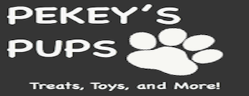
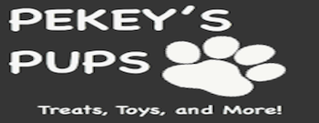

I am someone who strives to be the best I can be at everything I do. I grew up playing sports and that made me very competitive.
I am an avid Bengals and Reds fan, but more importantly, an Ohio State Buckeye fan. Just ask my dog, Zeke, who was named after the MVP of the 2014 national championship team.
As for my other qualities, instead of trying to describe myself, I asked people close to me. These are the words they felt represented who I am:
Passionate, Determined, Creative, Easy-going, Ambitious, Strong, Kind, Caring, Funny, Sarcastic,
Dependable, Protective, Frank, Adventurous.
Tyler Wilson, pictured right, is a motivated and
creative student who is on the hunt for a software development job. Explore
this newspaper to learn more about him. This website was built by Tyler using
Bootstrap, HTML, CSS, JavaScript/JQuery.
 
